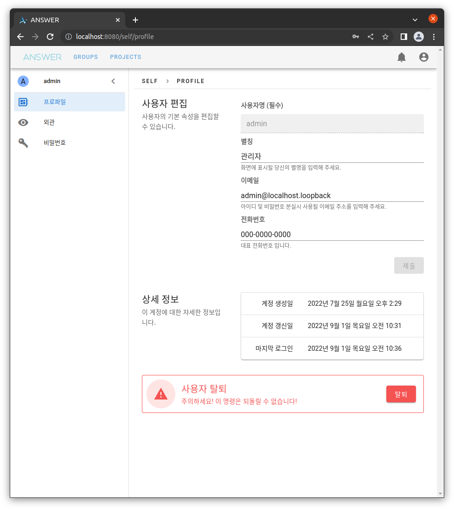
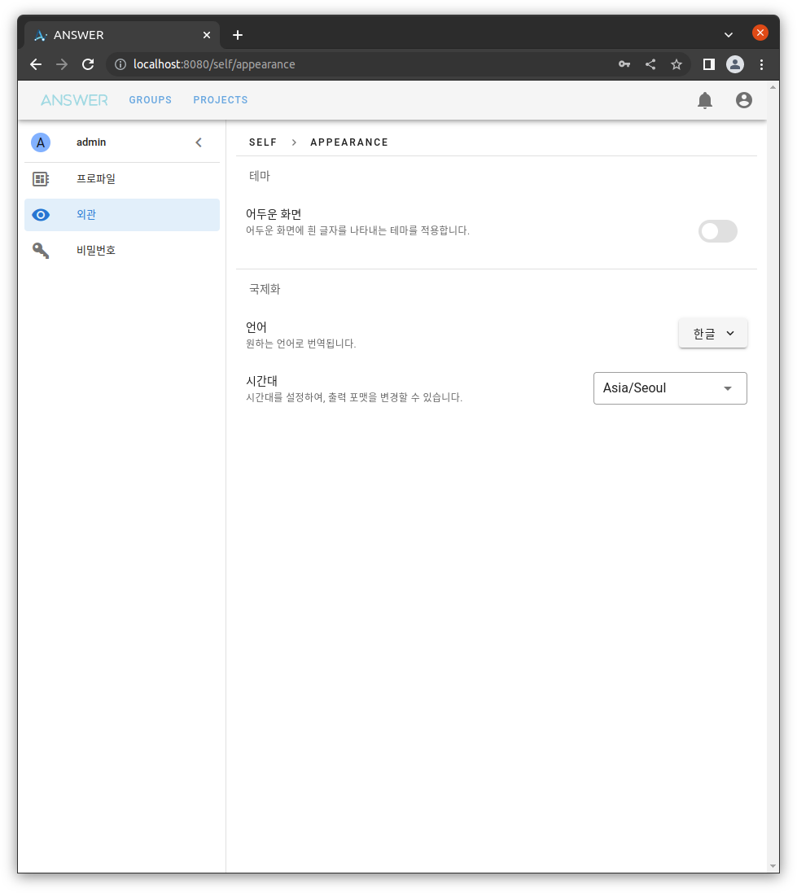
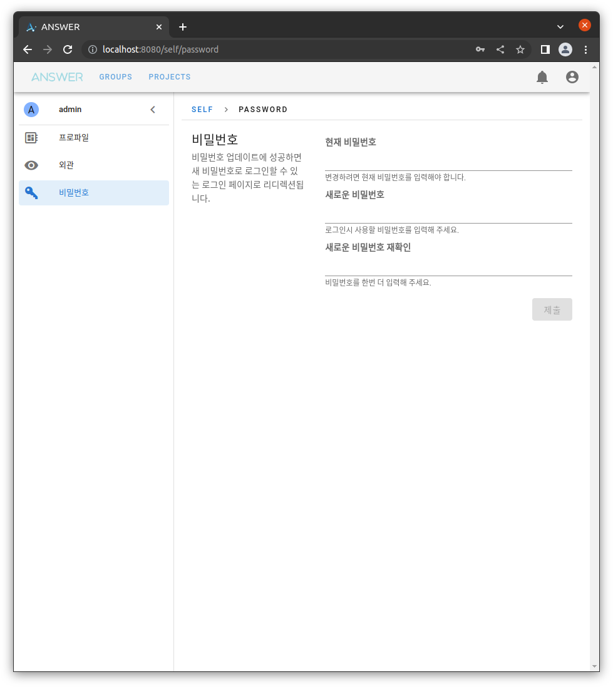

개인 설정#
모든 계정은 변경 가능한 고유한 설정 정보를 가지고 있습니다. 이 설정 정보를 변경할 수 있는 페이지 입니다.
프로파일#
사용자의 기본정보를 확인하거나 수정할 수 있습니다.
(단 사용자명은 변경할 수 없습니다)

상세정보는 다음과 같습니다:
계정를 생성한 날짜
계정 정보를 수정한 날짜
마지막 로그인 날짜
하단의 탈퇴 버튼을 클릭하면 영구적인 계정삭제가 진행됩니다.
탈퇴가 적용되면 관련 데이터 모두 삭제됩니다.
외관#
화면 출력에 관련된 변경 가능한 설정 목록 입니다.

어두운 화면#
스위치가 꺼져 있다면 밝은 테마, 켜져 있다면 어두운 테마를 적용합니다.
언어#
번역 테이블이 제공된 언어 목록을 선택할 수 있습니다. 현재 지원되는 언어는 다음과 같습니다.
한글
English
시간대#
출력되는 지역 시간(Local Time) 의 위치를 조정할 수 있습니다.
비밀번호#
설정된 비밀번호를 변경할 수 있습니다.
